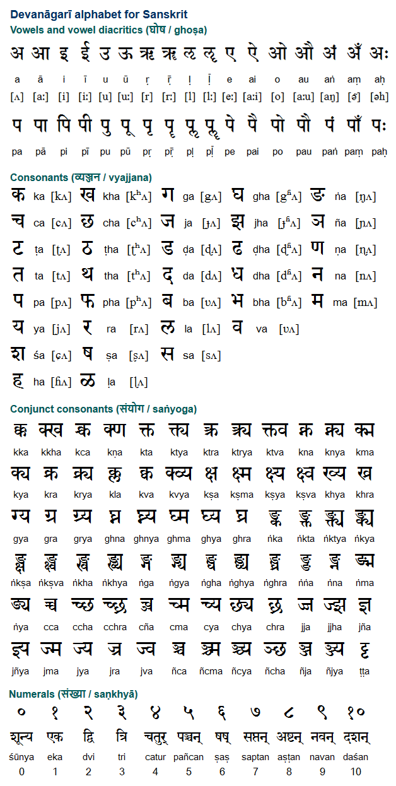

{kind=link}

27
v.3
This information is not only difficult, but also very concentrated, so if your head feels tired – don’t violate it, put this text away. Actually, it’s an universal rule: if your eyes are tired, don’t force them, close them, respect them, let them rest, and then they will serve you well. Also if you changed your geographic location and your eyesight became significantly worse, try to return to where you were born (or lived before) it may return your eyesight to norm (though it’s only an anecdotic evidence, it is firsthand here) it's also considered healthy to look at the borders of your eye-sight and to look at your fingerprints in the sun light moving them back and forth in front of your eyes to where you can distinguish them
Alphabet is ancient magical system. You may know of normanic runes & jewish kabbalah, but in this book we go even further than that, researching origins of civilization in times of first alphabetic records and even before them.
For some time jewish branch of civilization makes rather successful efforts to conquer & subjugate other branches of the tree of human culture, so that the word kabbalah in turkic became attributed to usury, and in russian to some wage slavery or to some obscure vicious practices of dark sorcerers, depending on the orthography. After all, why do you think they call it cabal. Recently wider audience became aware of what those practices are about. Letters, right? The same system this work researches. And if alphabet, azbuka, abjad, abugida, all these words encode the sequence of alphabetic order, could it be that kabbalah stand for KBL which is how it goes in the most of eastern writing systems? (but don’t take this KBL thing seriously, it wasn’t even in my drafts, I just brought it up, so you can just ignore it and only notice that eastern writing systems begin consonants not with B, but with C, which is K) or could it be kabba-la, as KL stand in koptic instead of M, but let’s talk of koptic (the egyptian) some other time, now it’s hindu dime.
(they have vowels separated from the consonants)
2
First letter, middle letter & last letter. Labials, though not initial consonants, are still grouped & only v stands a little separated, here’s why:
notice, that la is not always final. the example on the left avoids it for some cause. can this la be related to the note la? as if these examplars are of different dialect and of different musical modes

Now let's notice if sanskrit is similar to european letters. But nah, it's a little freaky, so I put it in separated page in case you wonder or feel like learning these signs with some mnemonics or whatever such exercises may be considered: comparing east to west
Here I will only notice that ङ is a form of ड which also have forms of ड़ and ॾ but I don't know what they're and also please notice how it reminds उ which is not t, but v, so don't mistake it and maybe research if they're related, so will I. Why I notice it is to say, that after K goes B, because all forms of N are N, and M is different. Doesn't sanskrit align lnm as 123? first vowels (and l among them) then linguals (with n) and labials are final (and m among them) - and I dare to say this could be the ancient form, because look at the left image above: M is the final consonant. Letters following it don't even follow the pentatonic (or penta something) structure. So La is optional. KaBa? Kaaba? am I tripping? I sure do, but could it be just the name for reverse order (or is it correct order and the one europeans use is reverse) - not ᚽ ᚠ ᚴ but ᚽ ᚴ ᚠ? Could Halaḥam (HLḤM) order originate here? Or, if not to ignore archaeology, could these canons have the same origin? h & l as vowels, rough ḥ as these kh-th and even N, in russian N is H, which is very weird. And M is the final consonant. In one book a professor recommended me . told that M in latin(?) was considered middle letter, and they also wrote that halves of abecedaries were rampantly found, but neither did they provide an image of those nor could I find any such an artefact (abecedaries are surprisingly rare, at least where I am looking for them) so that book was generally useless because I couldn't tell what in it is true, what is not. So I make this book in directly opposite manner. I use lots of images. Of other peoples' images, taken in the public domains of the internets, I skip those which tell (c) and shit, fuck copyright, I don't care. If you sell someone else's work, you're wrong, twice wrong if under a wrong name. but if you share it you're cool.
As you can see, the concept of ordering letters according to their articulatory features, though forgotten in european alphabets, is known in some asian ones. Though not in all of them. Here’s tibetan alphabet, and though its structure is similar to sanskrit alphabet, it’s still a little more distorted:
4
27